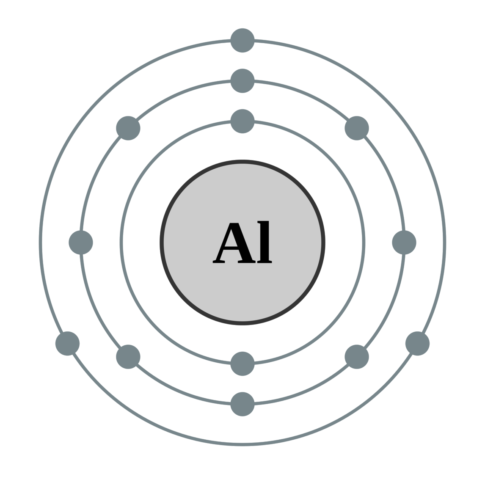

←
→
Aluminum or Aluminium is a chemical element with symbol Al and atomic number 13. It is a silvery-white, soft, nonmagnetic and ductile metal in the boron group. By mass, aluminium makes up about 8% of the Earth's crust; it is the third most abundant element after oxygen and silicon and the most abundant metal in the crust, though it is less common in the mantle below. The chief ore of aluminium is bauxite. Aluminium metal is so chemically reactive that native specimens are rare and limited to extreme reducing environments. Instead, it is found combined in over 270 different minerals.
Aluminium is remarkable for its low density and its ability to resist corrosion through the phenomenon of passivation. Aluminium and its alloys are vital to the aerospace industry[6] and important in transportation and building industries, such as building facades and window frames. The oxides and sulfates are the most useful compounds of aluminium.
Aluminium is remarkable for its low density and its ability to resist corrosion through the phenomenon of passivation. Aluminium and its alloys are vital to the aerospace industry and important in transportation and building industries, such as building facades and window frames. The oxides and sulfates are the most useful compounds of aluminium.